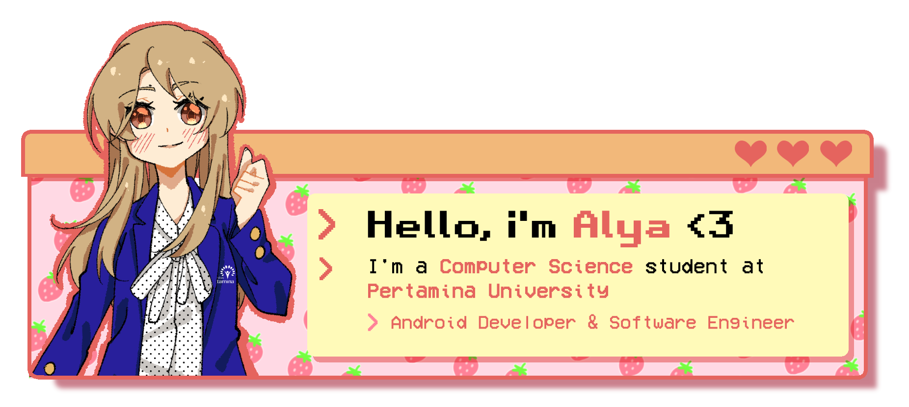

Aplikasi Penerjemah Diagram Kelas Menjadi Kode Bahasa Pemrograman JAVA
... dan sebaliknya!
Gunakan komponen diagram kelas di sebelah kiri kanvas.
Ada 2 fungsi utama di bagian atas yang bisa digunakan. Bisa diterjemahkan atau hanya disimpan menjadi gambar.
Cara menarik relasi
- Pilih relasi di panel komponen sebelah kiri kanvas
- Arahkan kursor ke kelas yang ingin dibuat relasinya
- Jika sudah muncul lingkaran merah di sebelah kanan komponen kelas, tekan dan tahan kursor tepat di lingkaran merah tersebut.
Lalu tarik garis hingga ke kelas yang dituju
- Lepas kursor jika ujung kepala panah sudah mencapai kelas relasinya
- Relasi berhasil dibuat, deh!

Version 1.0
Dibuat untuk memenuhi Tugas Akhir Ilmu Komputer Universitas Pertamina